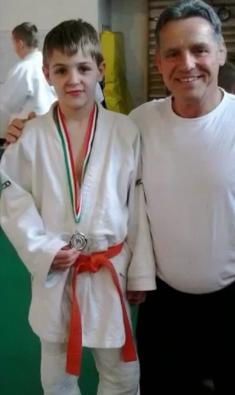
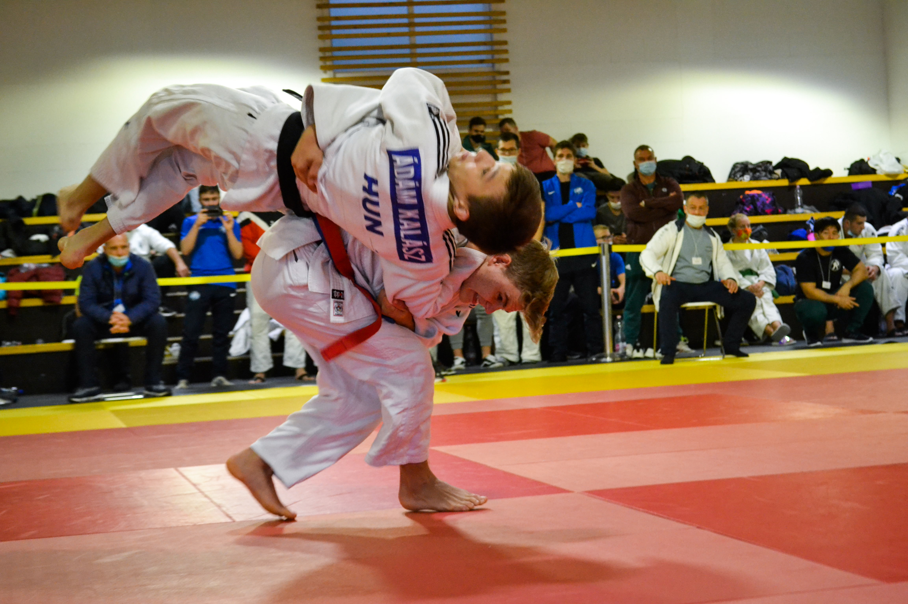
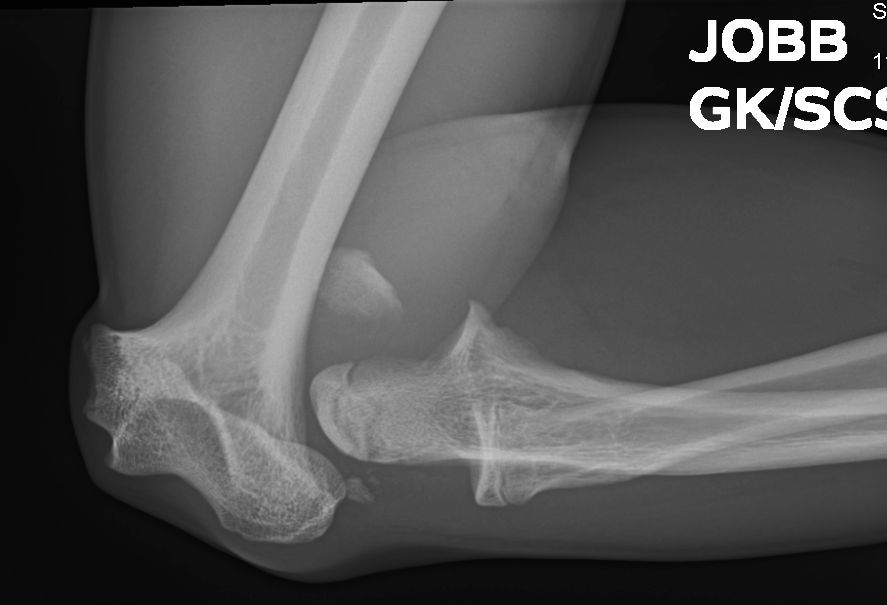
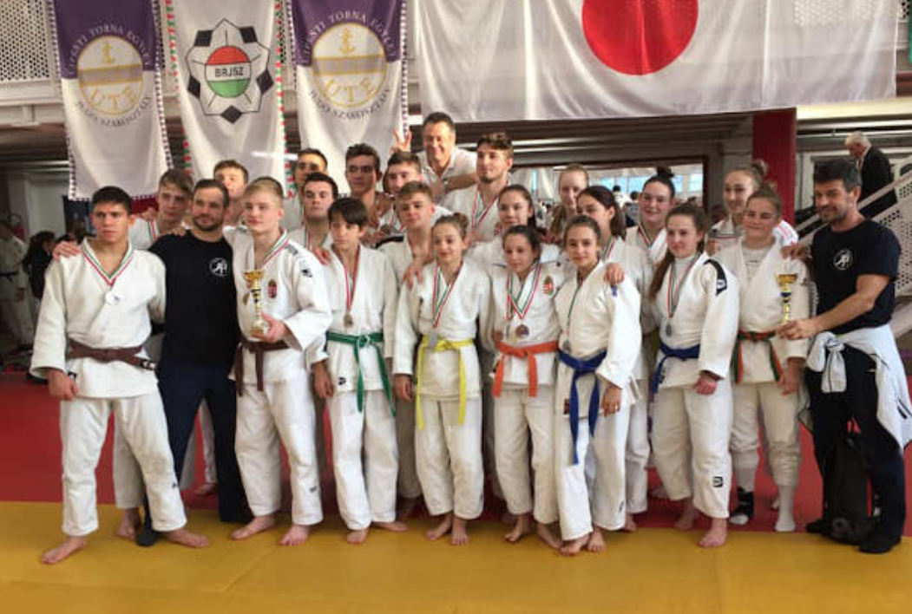

Fontos számomra a sport, hiszen már több mint 13 éve judozok versenyszerűen.

Ahogy kezdtem:
Elsősként kezdtem a sportot Kecskeméten, és az ottani edzőnek köszönhetően kedveltem meg a sportágat, és szereztem jó alapokat.

Mi is az a judo:
A judo, másnéven cselgáncs, egy japán küzdősport, melynek célja az ellenfél megdobása, leszorítása karjának feszítése, folytása. Ennek ellenére, a cselgáncs inkább egy védekező sport.

Sérülés:
Sajnos mivel ez is egy küzdősport, benne van a sérülés lehetősége. Úgy két éve volt is egy elég komoly könyöksérülésem, ami miatt ki kellett hagynom majdnem egy évet.

Most:
Jelenleg a Ceglédi Vasutas SE Judo Szakosztályának vagyok a versenyzője, immáron 6 éve. Céljaim közt van, akár nagyobb nemzetközi eredmény elérése.